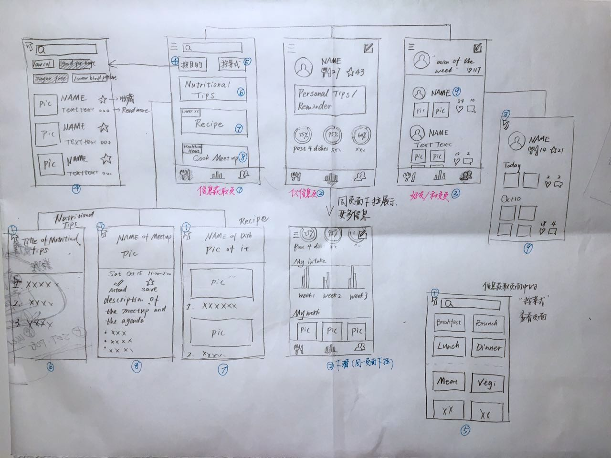

Background
Not enough today's mobile apps are made to increase the quality of senior's everyday life nor enough amount of senior groups are considered as center of the target users for many popular apps.The reasons might be obvious: they aren't technology savvies nor they want to be. But the fact i learned through a series of interviews and researches conducted for my "Design For Senior" class however showed the opposite: Seniors in the US are very much up-to-date to today's mobile technology. Almost everyone in our interview group has smart phones and they all are craving for some apps that would help them to improve their life qualities.
Challenge
We anchored from nutrition topic and thought that How can we help senior who cook at home to plan their meals healthier and reduce the risk of being in malnutrition?
Timeline
A total of 30 hours have gone into this project. Nearly 1/3 of the time was spent on user research and discovery. The rest of the time was used for ideation, prototyping, moving through iterations and designing a high fidelity visual design for a first version solution.
Known unknowns
There were a list of questions for which i was looking for answers.
Some of them are:
- What is the current meal planning system(tracking tool/cooking solutions), how does it work and what is the current experience seniors go through?
- What is the cooking pattern in terms of frequency and quantity? And what parameters influence a change in such pattern?
- How do seniors go about making decisions when it comes to cook?
- What are some of the pain points/struggles/issues with getting the right nutrition in daily meal planning?
- What are the driving factors that would trigger seniors to look for a change from their current meal planning system?
Quantitative Research
I started with some simple secondary research to get a higher level overview of customer behavioral patterns and aggregate stats about customer cohorts.
Some important insights that were relevant to this project are as listed down below:
- Of the millions of older adults admitted to the hospital every year, at least 1 in 3 is malnourished upon admission.
- Economically - It is estimated that disease-associated malnutrition costs the U.S. $157 billion each year.
- Other research points to a 300 percent increase in healthcare costs that can be attributed to poor nutrition status.
- Tools and service like USDA MyPlate for Older Adults and MagicKitchen.com are available.
User Interview
The next step was to learn about the quality of the experience. Qualitative research helps in understanding senior's mental models, how they plan meals and cook, how technically good they are when it comes to technology, and to understand more their behaviors and motivations.
With the help of my classmates, i was able to interview 6 users in person. The entire planning and research activity took 5 hours. You can find the initial interview script here.
I conducted two subsequent rounds of interview based on first time interviews, user's answers, and some of undiscovered questions.
Insights from Research

overall the research was very useful. It gave me enough confidence to move forward and by this time i was able to empathize very well with users struggles and pain points. The insights from research are summarized below:
- We started by asking a few of them what are the daily challenge in their meal planing. Most of them do cook at home but don't have tailored recipes towards their needs. And it is very expensive to go out and seek for professional meal planning service.
- Seniors described its hard to find motivation in cooking healthy by themselves.
- Engaging conversation with friends on nutritional topic may increase the overall nutritional awareness.
- Seniors have smart phones and incline to have access to most updated nutrition info online.
- Having Hard time in locating related/accurate nutritional info. Receiving deceiving misleading ones.
- Tasting ability drops cause more salt added in meals (unconsciously).
Define - Prioritizing Pain Points
I organized the insights to narrow down on the major pain points:
- Looking for nutritional info is manual process and requires cognitive load.
- Lack of motivation to cook with fun when allowed food is limited due to illness or diet restriction.
- There is greater friction in changing the current cooking system as the alternatives are expensive.
- As there is no central source of accurate nutritional info for different needs, this directly results the majority of malnutrition.
- Since there is lack of digitalization in the current system thereby introducing the possibility of human error.

Assumptions
It's impossible to design solutions without making assumptions. With limited time in hand i had to make following assumptions:
- Users would prefer a mobile app and keep it on their phone to receive legitimate information and achieve their health goals with some motivations.
- Users can be benefited from more healthy and legitimate recipes created and shared by users.
- Users need tailored info shared to them, browser recipes based on diet restrictions or disease type with no disappointment.
- Sharing recipes would motivate users to use the app and increase popularity through the peer network.
Job Stories
But too many assumptions are dangerous. Users come from various horizons, using user stories to come up with solutions presented the risk of being too reducing. So I decide to use Job Story Framework instead
Job story Framework:
I created the following job stories based on the user interviews:
- When I have limited food sources at home, I want to make use of them in the right way so that I don't waste money while getting right nutrition intake.
- When I get tired of my regular dishes, I want to make some changes on food planning so that I find cooking fun and still have good nutrition intake.
- When I have diabetes, I want to make sure I only consume what is allowed so that I don't put my health at risk.
- When I have to cook 3 meal everyday, I want to have the right nutritional info categorized accordingly so that it saves time to go over all recipes and becomes easier to use.
- When I learned other nutritious recipes, I want to share them to my close friends so more people have the same diet restriction can be benefit from the knowledge.
Ideating the solution
During the ideation process I typically use the B. J. Fogg's Behavior Model, as it helps to empathize with users while coming up with new solutions. It helps us to think through their minds and see if there are sufficient motivation, enough ability, and the right triggers at the right time for a behavior to occur.
It is difficult to influence a customer's motivation. The idea is to minimize friction at each step thereby increasing the ability to perform an action at the end. And also introducing the right kind of triggers at the right time.
Prototype and Testing
Low Fidelity
1. Sketches on paper
2. Monochromatic wireframes
Move to design the best flow of information - usually resort to monochromatic wireframes for avoiding personal bias for colors and styles. My favorite tool for designing interfaces is Sketch.

High fidelity prototyping
The next step is to design high fidelity visual designs. With this project, I had moved through 3 iterations in high fidelity to obtain satisfying results. You can find the link to the high fidelity prototype below.

Conclusion
I am very satisfied with the overall results and how the design has evolved. Along the way, I learned more about opportunities and challenges for UX in healthy care app and also for elderly group, especially while working on information architect. I also learned how important it is to carry out users tests with different kinds of backgrounds.
Given limited time spending on gathering data, it limited the scope of design. But for next version of the app i would take the following items into consideration:
- Design an offline nutrition educational meet-up info board for more traditional takers.
- Design a solution for seniors to write and upload recipes.
- I had skipped the custom nutrition tracing feature. I would do a little more research to understand if it is a true need for elderly people and design a solution based on its significance.
- Also, given that this is a product which is providing solutions for users to opt-in for regular use. I would love to experiment with applying behavioral science models to see if there are any opportunities for planting in any habit-forming features.